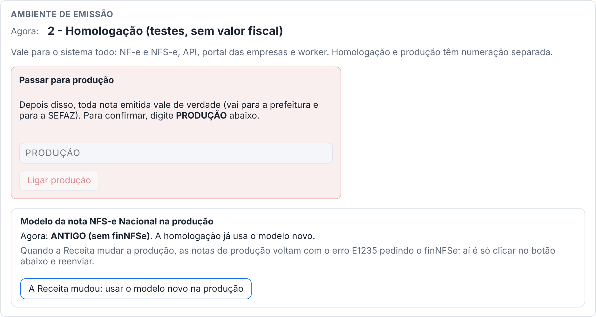
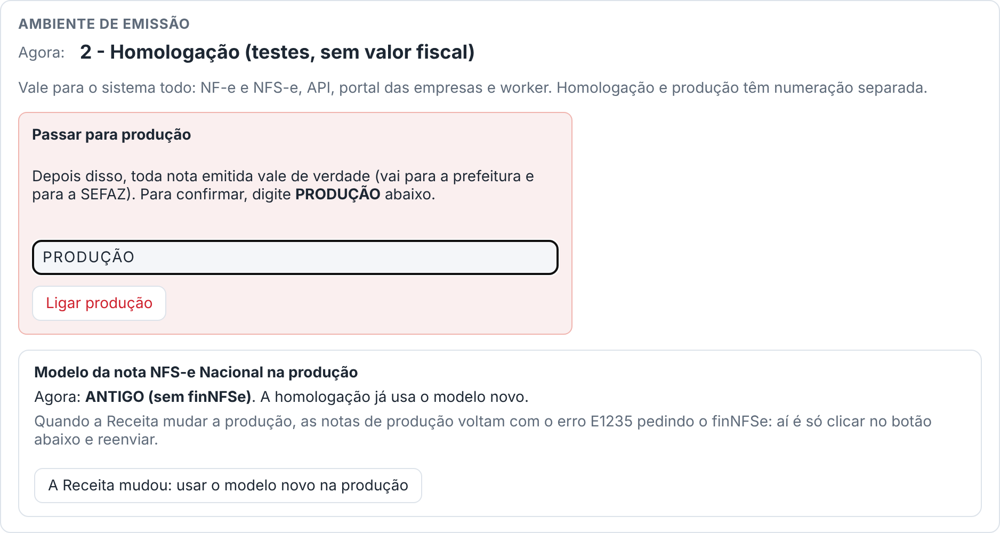

Trocar homologação e produção
Homologação é teste, sem valor fiscal. Produção é para valer. Só o administrador da plataforma troca, pelo painel.
warning Antes de começar
- Só administrador da plataforma (quem entra no painel) troca o ambiente. Nenhum cliente consegue.
- A troca vale para o sistema todo: NF-e e NFS-e, API, portal e worker, para todas as empresas.
- Homologação e produção têm numeração separada.
- Antes de ligar a produção, confira se as empresas liberadas já têm certificado: o painel avisa quais faltam.
-
Abra Sistema › Ambiente de emissão
Clique em Sistema. O primeiro bloco mostra o ambiente de agora: 2 - Homologação ou 1 - Produção. No topo do painel também aparece o selo do ambiente.

-
Para ligar a produção, digite PRODUÇÃO
No quadro vermelho Passar para produção, digite a palavra PRODUÇÃO. Só então o botão Ligar produção é liberado. Clique nele.
A partir daí, toda nota emitida vale de verdade. O painel mostra a faixa PRODUÇÃO LIGADA no topo.

-
Para voltar aos testes
Com a produção ligada, o bloco mostra Voltar para homologação (testes). Clique e confirme. As próximas notas serão só de teste.
info Modelo da nota NFS-e Nacional na produção
A Receita está trocando o modelo da NFS-e Nacional. A homologação já usa o modelo novo; a produção ainda usa o antigo. Quando a Receita mudar a produção, as notas de produção vão voltar com o erro E1235 pedindo o finNFSe. Aí é só clicar em A Receita mudou: usar o modelo novo na produção e reenviar as notas.
Se der errado
| O que aconteceu | O que fazer |
|---|---|
| O botão Ligar produção não libera. | Digite exatamente PRODUÇÃO (com ou sem acento). |
| Liguei a produção sem querer. | Volte para homologação na hora. Notas que já saíram em produção valem: se for o caso, cancele-as. |
| Notas de produção voltam com E1235 (finNFSe). | Use o botão do modelo novo, descrito acima, e reenvie. |